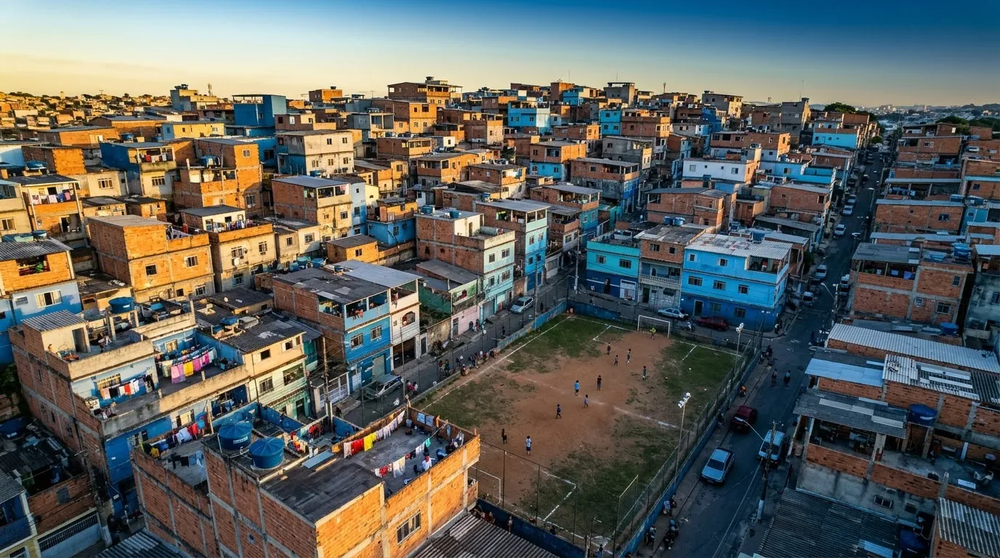

Informação de qualidade para quem conta moeda
Conteúdo de finanças costuma falar com quem já tem dinheiro. O Bolso Coletivo fala com quem vive com pouco — e acredita que isso também é sustentabilidade.

Nossa história
O projeto começou como Bolso Coletivo, o Trabalho A2 da disciplina Desenvolvimento Front-end para Web da UNICID. A equipe escolheu um problema que via de perto: pessoas de baixa renda e estudantes pagando mais caro pelo dinheiro — juros do rotativo, parcelamentos, golpes e apostas — sem encontrar conteúdo de finanças pensado para a sua realidade.
O Bolso Coletivo começou com o texto de aprofundamento, o tema, a página de vídeo, o carrossel e a identidade visual em tons de azul. Depois, o site cresceu, ganhando simuladores, um noticiário atualizado todo dia, dados de 2026 e um layout novo, sempre com acessibilidade como prioridade.
Missão, visão e valores
- Missão
- Levar educação financeira gratuita, simples e acessível a quem vive com pouco, para reduzir a vulnerabilidade a dívidas, juros abusivos e golpes.
- Visão
- Ser uma referência de conteúdo financeiro confiável para estudantes e famílias de baixa renda, usado também por pessoas com deficiência sem barreiras.
- Valores
-
- Inclusão: todo conteúdo pensado para teclado, leitor de tela e celular.
- Transparência: todo número com a fonte ao lado.
- Consumo consciente: decidir os gastos em vez de deixá-los acontecer no automático.
- Respeito: falar de dinheiro sem culpa, sem julgamento e sem promessas fáceis.
- Privacidade: nenhum dado sai do navegador; sem cookies nem rastreadores.
Sustentabilidade e impacto social
O tema conversa com os Objetivos de Desenvolvimento Sustentável da ONU 1 — Erradicação da pobreza, 10 — Redução das desigualdades e 12 — Consumo e produção responsáveis. Economizar com consciência é também consumir menos por impulso, desperdiçar menos e planejar melhor.
O próprio site segue essa ideia: é leve (sem frameworks nem rastreadores), usa imagens otimizadas em WebP e fica hospedado na Railway.
Equipe
-
Camilo Eduardo
Bolso Coletivo
-
Carlos Eduardo
Bolso Coletivo
-
Gabriel Evaristo
Bolso Coletivo
-
Gabriel Oneil
Bolso Coletivo
-
João Vitor
Bolso Coletivo
-
Yago Dos Santos
Bolso Coletivo
Selo de autoria
Conteúdo original · Bolso Coletivo © 2026
Textos, tabelas, simuladores, vídeo e áudio produzidos pela equipe. Dados de terceiros sempre acompanhados da fonte.
Como foi feito
- HTML5, CSS3 e JavaScript puros, sem frameworks e sem etapa de build.
- Mobile-first, com foco em acessibilidade (WCAG 2.1 nível AA) e validado no W3C.
- Código aberto em github.com/CamiloEduardo1904/FrontEndA2.
Uso de inteligência artificial
Um assistente de IA foi usado como apoio para escrever código e rascunhos de texto, e as imagens da galeria foram geradas com IA. A narração do vídeo e do áudio usa voz sintética. Todo o conteúdo foi revisado pela equipe, que é responsável pelo que está publicado.
Este site tem finalidade educativa e não substitui a orientação de um profissional de finanças. Nada aqui é recomendação de investimento.